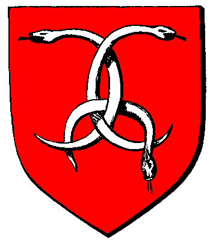

| Übersicht,
Allgemeines |
|
server ausfall (1  ) )
|
Altan Stormwind
 |
eine Umfrage bei uns hat ergeben, dass wir nicht dafür sind!
Bitte normal alles laufen lassen, wir haben sicherlich die größeren Verluste dadurch ;) |
24.06.15 15:04
 |
|
Support
 |
Schwierige Entscheidung, sorry schon mal dafür.
Da wir jetzt die Produktionsrunden wieder in der Reihe haben:
- die Hauptauswertung um 6.00 Uhr lief planmässig
- die 10.00 Uhr Runde lief um 13.16 Uhr
- die 14.00 Uhr Runde lief um 15.00 Uhr
- die 18.00 Uhr Runde läuft planmässig
Damit sollte es keinen weiteren Ausfall gegeben haben. Für den hoffentlich unwahrscheinlichen Fall, dass es durch nicht planmässige Produktion mit anschließender Leerung und Neubefüllung doch zu Ausfällen gekommen sein sollte, bitten wir um gesonderte Nachricht im Supportforum, wir werden diese Meldungen dann prüfen und ggf. nachbessern. Vorab die Bitte oder der Hinweis, wir werden da keine ungerechtfertigten Geschenke vergeben.
Damit würden wir den Ausfallmodus jetzt tatsächlich wieder ausschalten, auch wenn nicht alle Spieler damit glücklich sein werden.
Grund für den Serverneustart waren übrigens keine technischen Probleme von unserer Seite, sondern ein zum Glück misslungener Angriff von außen.
(Anmerkung der "Redaktion": Damit sind eure Daten btw. sicherer als die vom deutschen Bundestag)
Gruß
Support |
24.06.15 15:22
|
|
Holgrîm
 |
Es ist leider mal wieder soweit, der SW-Server hängt seit ca. 9:45 Uhr, Monster, Kamele & Produktionen stehen still und die Hauptauswertung verschiebt sich seit dem.... |
31.10.15 14:12
|
|
Altan Stormwind
|
*g*
wenn du es hier nicht geschrieben hättest, wäre es mir überhaupt nicht aufgefallen :D
ich glaube SW geht nicht nur Server seitig dem Ende entgehen... |
31.10.15 14:45
|
|
Altan Stormwind
|
PS. dieses Mal ist es mir Bockwurst was sie mit den ausgefallenen Runden machen ;) |
31.10.15 14:46
|
|
Holgrîm
|
Ach *auf den Kalender guckt* heute ist doch der 31.12.2015, das wars dann wohl.... |
31.10.15 15:04
|
|
Nariel S. Cobar
 |
Kann ich meine Kohle verbrennen eigentlich auch, hab ich mehr von ^^ |
31.10.15 15:12
|
|
Altan Stormwind
|
von wegen Ausfallmodus...
ich denke der Server macht jetzt was er lustig ist, so werden die letzten 2 Monate noch einmal richtig spannend! |
01.11.15 13:17
|
|
Pyracheilos
 |
Lieber spät als nie die Hauptrunde. :D |
01.11.15 13:24
|
|
Arin
 |
Endlich wird das Spiel etwas schwieriger :o) |
01.11.15 13:35
|
|
Kittin Silberfang
 |
"Scherbenzufall" |
01.11.15 13:38
|
|
Priboi
 |
vom Support :
Sorry für die Unannehmlichkeiten,
--------
süss *ggg* |
01.11.15 15:44
|
|
Torkon
 |
Und wieder mal spinnt der Server für die Hauptseite rum. Hat wohl die Putzfrau "versehentlich" den Stecker gezogen. *fg* |
15.11.15 6:30
|
|
Übersicht,
Allgemeines
|